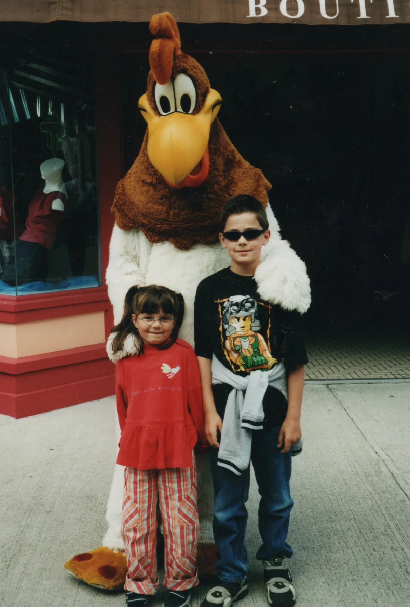
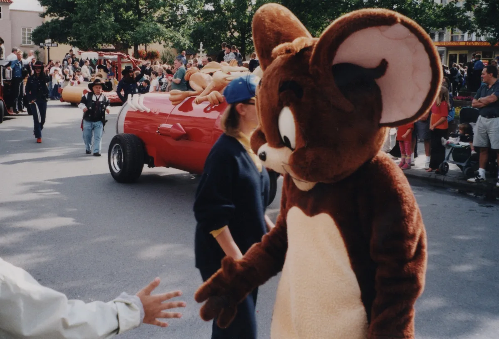
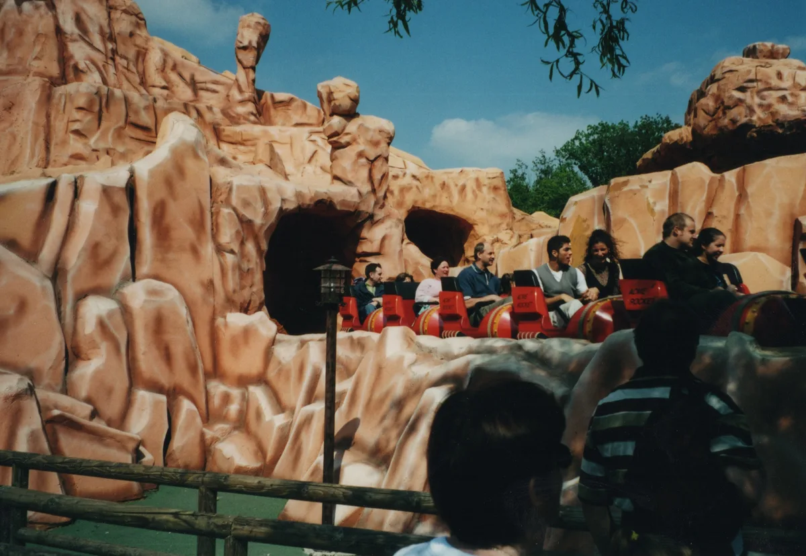
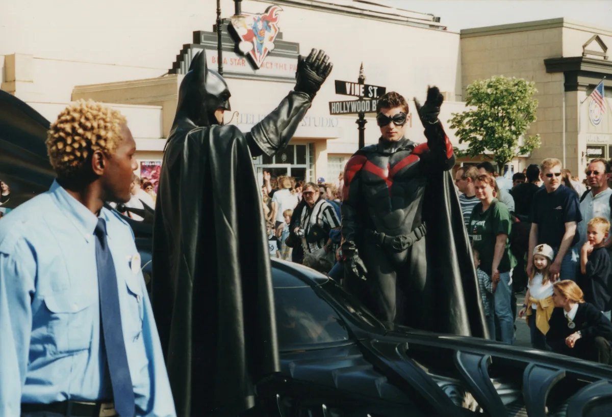
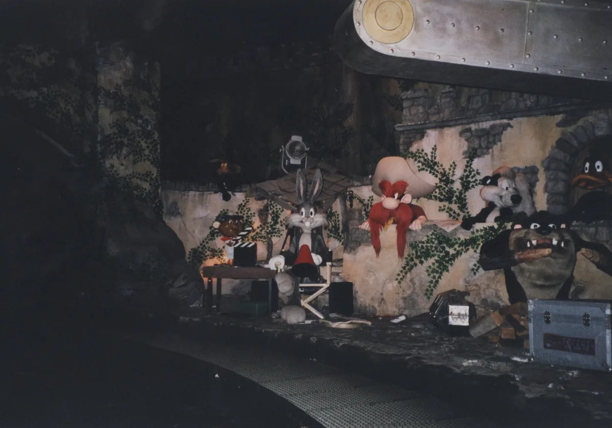
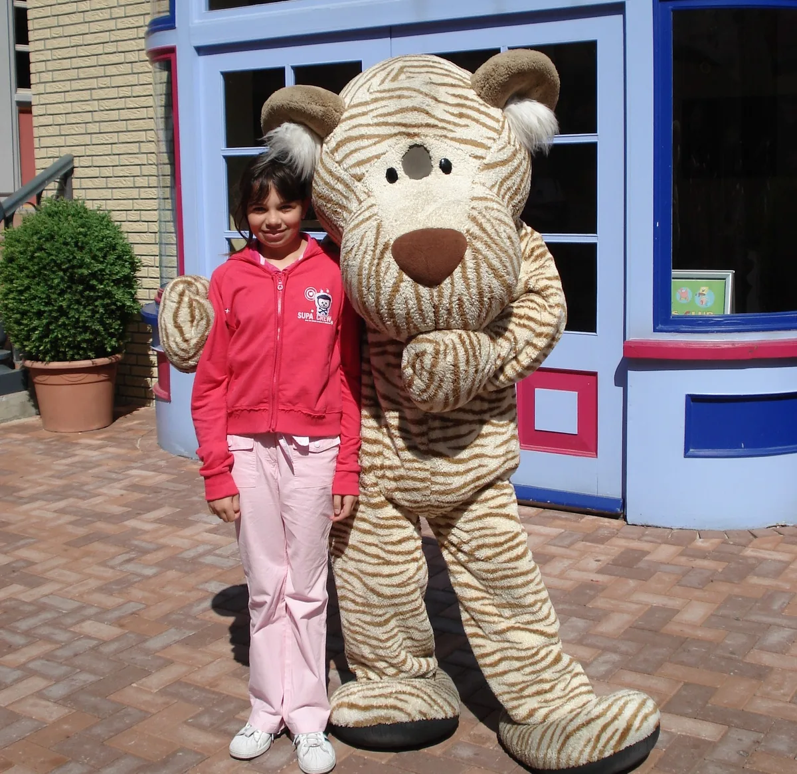
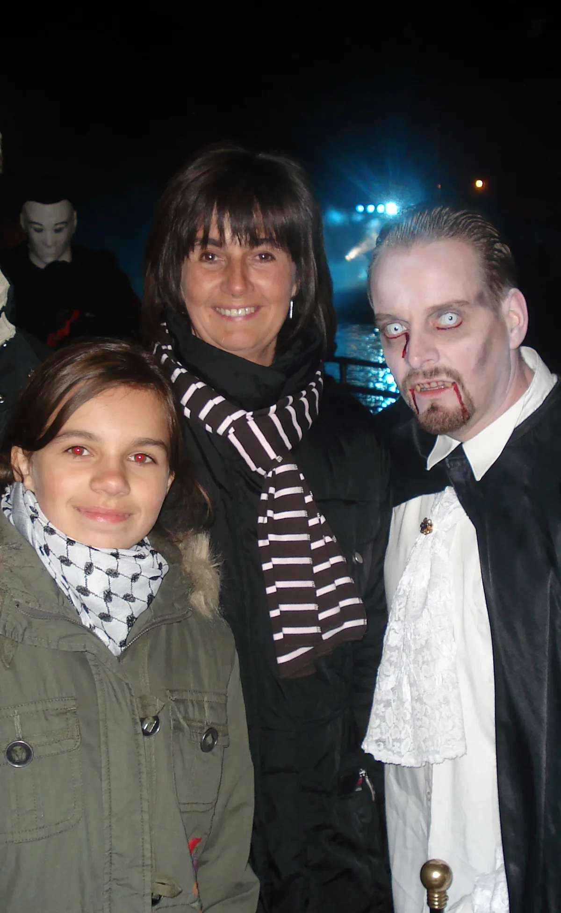

Am Samstag hat der Movie Park sein 30-jähriges Jubiläum gefeiert. Das wollten wir uns natürlich nicht entgehen lassen.
Ich bin zwar noch nicht seit 30 Jahren dabei, aber da wir immer in der Nähe wohnten, bin ich mit dem Movie Park (bzw. damals noch Warner Bros. Movie World) aufgewachsen.

Ich weiß von Fotos, dass wir auf jeden Fall an meinem ersten Schultag mit Mama, Papa, Pascal, meiner Tante und meinem Onkel dort waren. Damals war der Park, finde ich, noch etwas atmosphärischer und mir gefielen auch die Looney Tunes Charaktere sehr (vor allem die Bootsfahrt (daraus wurde später Ice Age) und das Karussel (das war irgendwann einfach weg)).




Später kam dann das Nickland; da muss ich so in der 5. oder 6. Klasse gewesen sein. In den Ferien war ich mit einer Freundin fast jeden Tag dort und wir lagen oft einfach nur im Nickshop und haben Filme geschaut (da lief eigentlich jedes Mal "Die Kühe sind los!"). Da sämtliche Geschwister von ihr dort gearbeitet haben, konnten wir dann auch immer kostenlos Pommes und Nuggets essen.


Auch wenn ich jedes Mal sage, dass man vieles so viel schöner und liebevoller gestalten könnte, gehe ich immer noch gerne in den Movie Park. Am liebsten fahre ich die Studio Tour und die Star Trek Achterbahn. Auf den Tower und Fragezeichen (wo ich in meiner Jugend sooo viele Runden sitzen geblieben bin) gehe ich heute aber nicht mehr drauf. Dafür bin ich vielleicht einfach schon zu alt. Die Holzachterbahn finde ich mittlerweile auch ziemlich schmerzhaft. Wenn ich Van Helsing’s Factory fahre, hoffe ich jedes Mal, noch irgendwelche Gremlins Überbleibsel zu entdecken.
Und wir hatten auch am Samstag einen tollen Tag im Movie Park mit einem Orchester, das Filmmusik gespielt hat, über leckeren Churros hin zu einer ganz besonderen Jubiläumsparade.